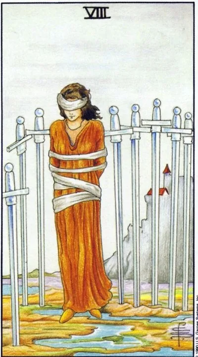

Minor Arcana · Swords
VIIIEight of Swords
A bound woman among swords: the cage is half built by circumstances, half by her own thoughts, and her door is unlocked.
Archetype and core meaning
The woman stands blindfolded, surrounded by eight blades, the drama is in the details: the ropes lie loose, the bandage is removed with one movement, between the swords there are gaps for the exit. The cage is exactly half real: the second half was built by beliefs "impossible," "late," "not for me."
It's a state of learned helplessness: constraints have become so common that they're no longer tested. Debt, contract, diagnosis, other people's expectations -- every sword seems invincible until you try to get around it. A card doesn't devalue a captivity -- circumstances are cruel. It refines the optics: the main captivity in the bandage.
Daily life
A day is like running in a bag: commitments are layered, every movement hits the bars of a chart, write everything "impossible" on paper and ask each person, "If I could?" At least one link in the chain turns out to be a habit, not a wall. The task of the day is not to break the bonds, but to see their true thickness.
Work and career
The snags: a bonded contract, a position with no prospects, a leader who puts pressure on a sense of duty. There seems to be nowhere to go — the market is narrow, the age is old. Some of the prohibitions are long outdated: the market has changed, skills have grown. Start with intelligence — update your resume, talk to people. Intelligence does not require you to run, but restores your vision.
Relationships
The relationship became tight: "for the sake of the children," "he can't stand it alone," the bandage is worn with words of care. The partner can limit the real thing, but more often the jailer can - the scenario: the fear of loneliness is stronger than the pain of living together. Test: what rules apply, who made them, what happens if you break the softest?
Health
The therapeutic constraints -- diet, regimen, corset -- go from being treated to being a prison: people think they're sick where they're healthy; the fear of movement after injury delays recovery; the body doesn't need heroism, it needs a precise diagnosis of its own boundaries.
Spiritual meaning
Magical binding: vows of the past -- obedience, loyalty, poverty -- are effective when the context is dead. Energy is pinched at the throat and eye level: one is not supposed to speak or see. Practice is an inventory of those vows: to revoke an outdated promise in writing and burn a list. Liberation begins with a word.
The knots weaken: the victim discovers that the doors have been opened - liberation begins with a look, continues with a step.
Archetype and core meaning
The moment the bandage slides: the woman sees the arena -- half the swords of the stick, the ropes are long untied, the edge is open behind her back. The first sense is liberation: the circumstances are mitigated, help comes unexpectedly, the loophole is where yesterday was a blank wall.
The second sense goes deeper: the author of the limitations changes: the person admits that he has built a large part of the cell himself, and liberation becomes a practice of dissolving one knot every day. The warning is close: freedom is as frightening as captivity. The person who is used to the cage can pull the bandage again. What will you do with the light you see?
Daily life
Circumstances are tightening the grip: suddenly time was free, an impending commitment was cancelled, money was found for things you were afraid to think about, say yes to a sentence that was answered with an automatic "can't." In the evening, count: how many of today's "can't" turned out to be conventions?
Work and career
Breakthrough: leaving a stifling position, abandoning a bonded project, unexpected offer. Rules are revised, the dispute ends better than expected. The main thing is to bring the release to the end: many find the door and stay next to you. Name the date of transition - uncertainty will return the cage.
Relationships
Addiction loses its power: the relationship is visible without fog — either the couple negotiates new honesty, or you choose the exit, the year hung open, the control of the partner weakens with the game of "what he thinks." For those who are afraid of intimacy, the opposite is true: let the person be allowed in is not fatal. Freedom in love is the ability to choose without fear.
Health
Removing self-inhibitions heals the body: the patient gets out of bed he didn't want, the diet softens to reason, the movement returns the joints voice, the cause of the complaint, which has been tormented for years, was not the same. The caution is one: reconstitution of the body requires gradualism, do not rush from the cage into the pool.
Spiritual meaning
The work of liberation: the removal of other people's programs and birth prohibitions, the termination of outdated obligations, the return of scattered power. Meditation on a card shows where you keep your cage locked up. Finish the ritual with action in the world: the first real step is mandatory, otherwise the force will be recaptured.
🌿 How the school reads this rank
The main idea
There are a lot of external problems that need to be addressed consistently, and the way out is not panic, but the right way of doing things.
How it manifests
In work, you have to sort things out one by one. In relationships, you have to keep your distance and get to the facts first. In decisions, you have to go from one to the next, check the next step.
The shadow side
A person gets stuck because of an excess of options or the wrong pace: he is in a hurry, then he is endlessly cautious.
Keywords
Problems · consistency · caution · limitations · pace
📜 In detail — from the rank lecture
Essence of the card
"traditionally everyone is afraid," but "there are no bad or good tarot cards - there are cards that at some point like or dislike" A woman with her hands tied and her eyes blindfolded among swords in a swamp.
Upright position
- Work / everyday life: “our whole life is a series of problems that we solve”; you get excited when solving them – life is not a series of problems, but “a sequence of pleasant actions” (going to the movies with your wife is a chain of joyful little things).
- School techniques: the parable of the wreath (to break through the knee did not work out - the younger one untied the twig): solve problems one by one, each untiees his hands; eyes are tied: "eight - too many thoughts", choose intuitively "the one that is closer"; one sword in front - the first problem, the rest are waiting in line; go from heap to heap, trying with a foot, "not like an elk on corn", slowing down in the elements of air.
- Relationships: Swords/air are a little distant (Bowls are a merger); the phrase “we need to talk” is disturbing; contracts (marriage contract is like an ace of swords) give security, although they cut feelings.
- School Distinction: Introspection, Nightmares, Dream Analysis – Nine Swords (Freud); Eight – External Problems.
Negative meaning
• “Stuck” (many points of view, lack of time / opportunities) or the wrong pace: haste (“cut your hands”) or excessive caution (too long to probe the kidney).
School emphases and distinctive points
- Works according to Waite (+ Manar deck – “it is good to consider the sexual aspects of relationships”); “78 doors do not work”; books like Sklyarova do not like – “too smart, they drown out the feelings of cards.”
- “Tarot is not a science, but a sensual experience, practically the art of prediction”; experience is hundreds or thousands of scenarios.
- Astrology of the system: eights - eighth house, Scorpio, moderation; roll call with arcana Moderation.
- Number series: two fours, four-legged animals, rhythm of the waltz; Slavic-household series: broom from a parable, grandmother knits, Friday dessert.
- Psychology – moderate ("psychologists may be offended"): analysis = swords; the main suit of the tarot is water, emotions.
- Cinema/cartoons: Livsey with chamomile (Treasure Island), stalactites and 2012, trendy Dune, the idea of the Velda review.
- Practice of layouts: the choice of an employee, the "card of the day" with the pentacle eight inverted, it depends on the context: "the same cards mean different things in different situations" (example: eight wands with the Empress).
Keywords
problems as they arrive; one twig; from heap to bud; calm exit without panic; moderate pace.